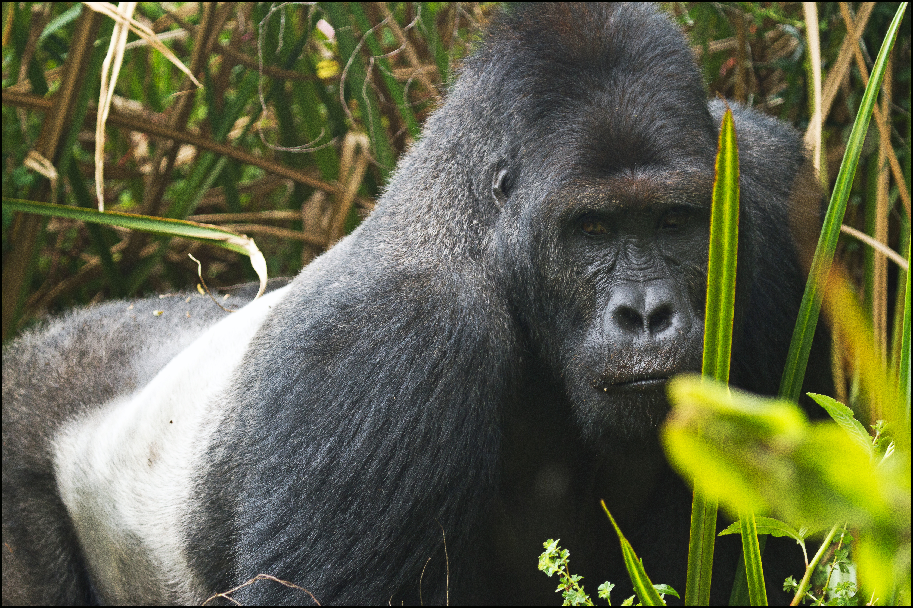
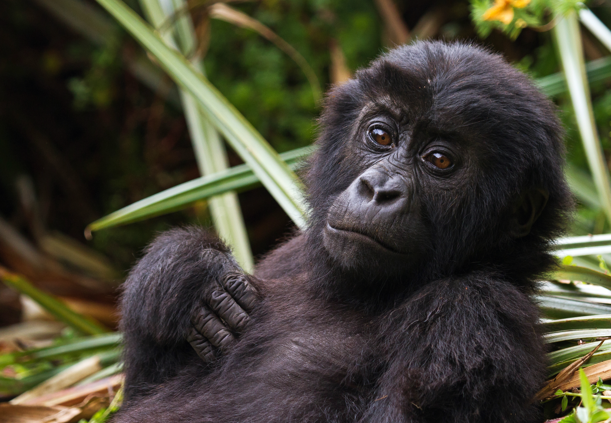
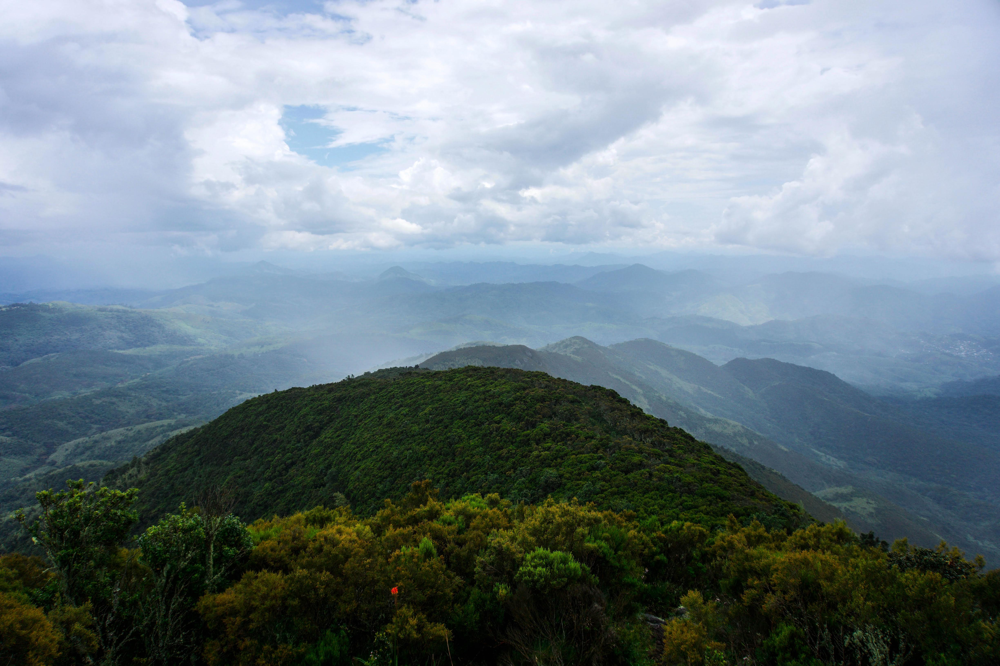
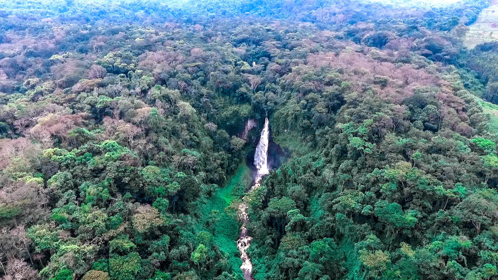

Chargement des données météo...
Bienvenue sur la plateforme PNKB Forest Watch
Cette application assure le suivi en continu du couvert forestier du Parc National de Kahuzi-Biega (Sud-Kivu, RDC) en couplant l'imagerie spatiale Copernicus Sentinel-2 et les alertes citoyennes de terrain.
Carte Interactive & Télédétection du PNKB
Basculez entre le plan OSM et la vue satellite réelle en haut à droite de la carte.
📲 Canaux d'alertes directs et gratuits
Soyez prévenu dès qu'une perte forestière (≥ 0,5 ha) est détectée dans le parc.
Alertes de Déforestation Détectées
📜 Journal Historique des Alertes
Historique des scans Sentinel-2 accumulés semaine après semaine.
Transmettre un signalement de terrain
Coupe d'arbres, feu de brousse, braconnage, intrusion observée ? Alertez immédiatement avec vos coordonnées GPS et photos.
Signalements Récents sur le Terrain
Le Parc National de Kahuzi-Biega (PNKB)
Situé dans la province du Sud-Kivu (RDC), le PNKB est l'un des sanctuaires de biodiversité les plus précieux d'Afrique centrale. Il préserve une transition écologique continue exceptionnelle sur 2 708 mètres de dénivelé (de 600 m à 3 308 m d'altitude au sommet du Mont Kahuzi).

Mâle dominant emblématique du PNKB. Le gorille de Grauer (Gorilla beringei graueri) est le plus grand primate vivant au monde.
Parc National de Kahuzi-Biega
Le PNKB abrite plus de 60 % de la population mondiale restante de cette sous-espèce endémique en danger critique d'extinction.
Secteur Tshivanga (ICCN)
Vue aérienne de la forêt de montagne et de la zone afro-alpine. Un château d'eau naturel vital pour tout le Sud-Kivu.
Massif de Kahuzi-Biega
Réseau hydrographique dense alimentant le bassin versant du fleuve Congo et le lac Kivu.
Forêt dense sempervirente🏔️ Gradient Altitudinal
De 600 m dans le bassin sédimentaire occidental jusqu'aux sommets des Monts Kahuzi (3 308 m) et Biega (2 790 m).
🌿 Zonation Végétale
Bruyères géantes afro-alpines, bambouseraies d'altitude (Yushania alpina), et forêts équatoriales à Limbali (Gilbertiodendron dewevrei).
⚠️ Corridor de Lemera
Goulot d'étranglement reliant la haute altitude (60 000 ha) à la basse altitude (540 000 ha). Zone prioritaire de notre surveillance spatiale.
Comparaison Historique : 2015 - 2025
Évolution de la canopée observée sur une décennie par imagerie satellite.
Référence 2015
Situation 2025
Évolution Historique du Couvert Forestier (10 ans)
Pourcentage de canopée dense préservée dans le PNKB.
📊 Pertes Détectées par Scan Hebdomadaire
Hectares de perte forestière estimés à chaque scan Sentinel-2.
Sources et Partenaires Scientifiques
Les analyses géospatiales de PNKB Forest Watch s'appuient sur les flux de données ouverts de :
- Copernicus Dataspace (Sentinel-2) : Agence Spatiale Européenne (ESA) — imagerie optique multispectrale haute résolution (10m).
- NASA / USGS : Missions Landsat historiques pour les comparaisons décennales.
- Global Forest Watch (GFW / WRI) : Algorithmes de détection GLAD et RADD.
- ICCN (Institut Congolais pour la Conservation de la Nature) : Limites administratives du Parc National de Kahuzi-Biega.